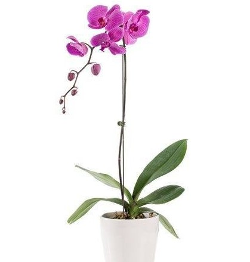
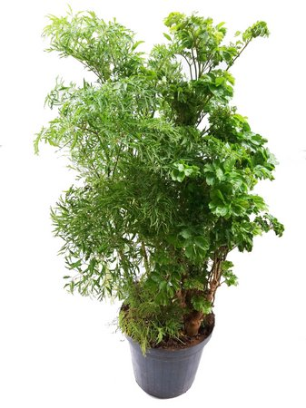
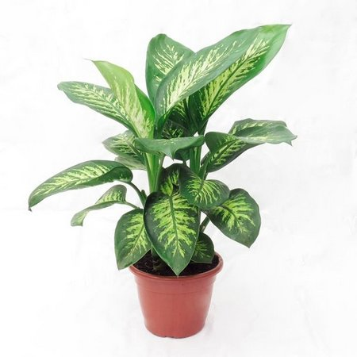
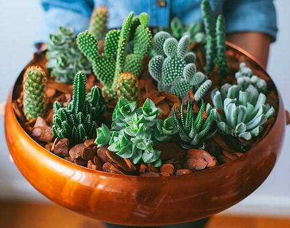

Aqui você encontrará a plantinha que mais combina com você!
Orquídeas são todas as plantas que compõem a família Orchidaceae, pertencente à ordem Asparagales, uma das maiores famílias de plantas existentes. Apresentam muitíssimas e variadas formas, cores e tamanhos e existem em todos os continentes. As orquídeas são verdadeiras aliadas para a decoração. São espécies delicadas e muito charmosas, capazes de se adaptar bem em vários ambientes. E com os cuidados certos é possível manter a saúde da planta por um longo tempo.
Está é a mais comum, a Phalaenopsis
A árvore da felicidade é originária da Polinésia, da Índia e da Malásia. Ela pode ser encontrada em suas versões: polyscias guilfoylei (macho) e a polyscias fruticosa (fêmea), que se diferenciam com relação à aparência e resistência.
Diz a lenda que a árvore da felicidade atrai prosperidade e nunca mais deixa a alegria ir embora da casa. Para os sentimentos de harmonia se multiplicarem, é apropriado usar o mesmo vaso para plantar duas mudas. Assim, você pode ficar com uma planta e dar a outra de presente para uma pessoa querida.
A árvore da felicidade é uma planta de meia sombra, que cresce lentamente e pode atingir até 5 metros de altura. Sua folhagem verde escura lembra trevos de quatro folhas. Para atingir o seu tamanho máximo, leva em média 20 anos.
A comigo-ninguém-pode prefere meia-sombra, recebendo sol do início da manhã ou sol indireto. Se ela receber mais sombra, vai perder a parte branca, ficando com a coloração das folhas mais verdes. E, se receber sol forte, pode ter as folhagens queimadas e o desenvolvimento prejudicado.
O poder da comigo-ninguém-pode é muito utilizado por aqueles que conhecem suas propriedades místicas. Ela é capaz de afastar todo o tipo de energia negativa, seja de quem a carrega ou do local onde está plantada. Seus benefícios de proteção contra o olho-gordo, inveja e azar são fortes e muito eficientes.
Ela também é perfeita para quem deseja trazer paz e tranquilidade para algum ambiente. Mas, se você tem um pet em casa é melhor você ficar atento: a planta comigo-ninguém-pode é TÓXICA.
Pode não parecer, mas os cactos e suculentas gostam e também precisam de água para sobreviver. Mesmo sendo plantas que sobrevivem bem em lugares secos e com muito sol, é preciso regá-las com uma certa frequência. Molhe a terra com cuidado: em dias quentes, borrife um pouco de água e molhe uma vez por semana e. em dias frios. de 15 em 15 dias. Além disso, não se esqueça de adubar bem a terra: faça isso pelo menos uma vez por mês.
Os cactos também precisam de muito sol e espaço aberto, um lugar arejado onde eles possam tomar um ar. Por isso, fique ligado onde você vai deixar seus vasinhos. Tente colocá-los em espaços com boa luminosidade.
